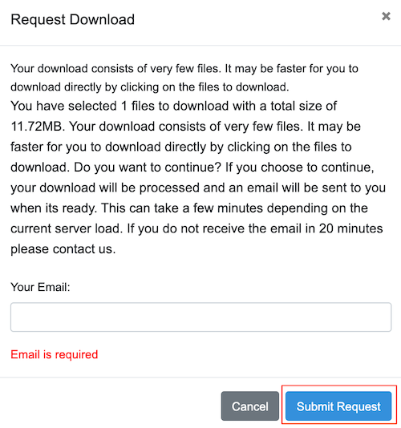
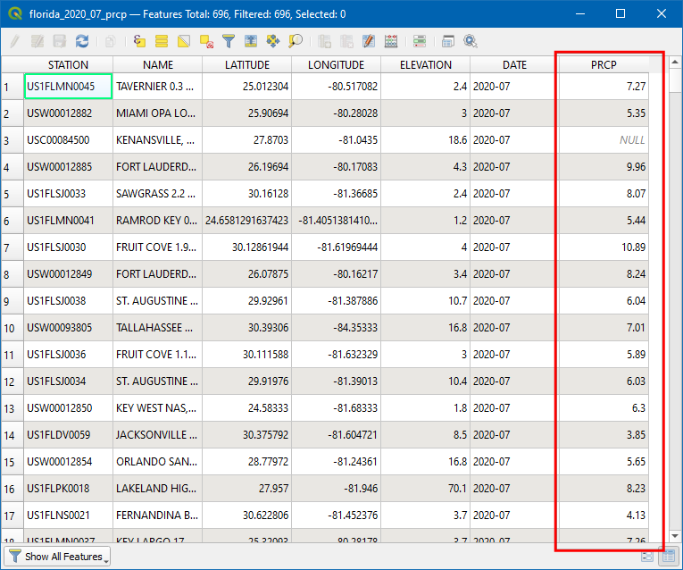
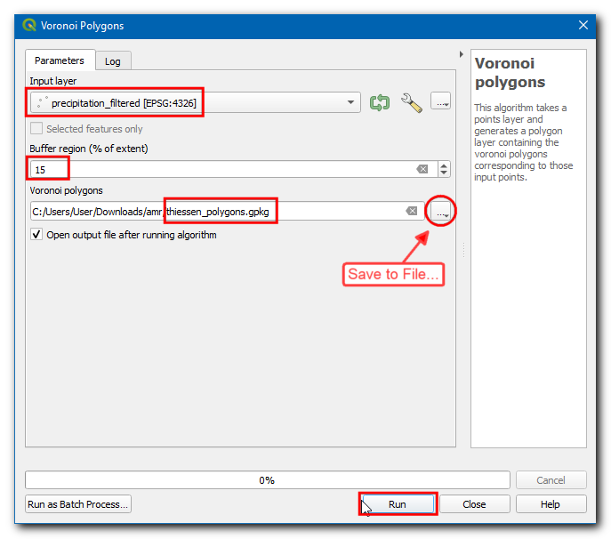
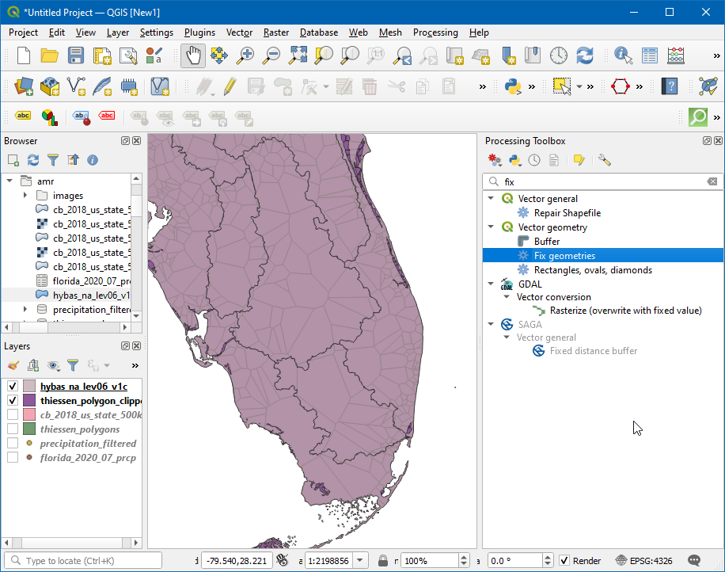
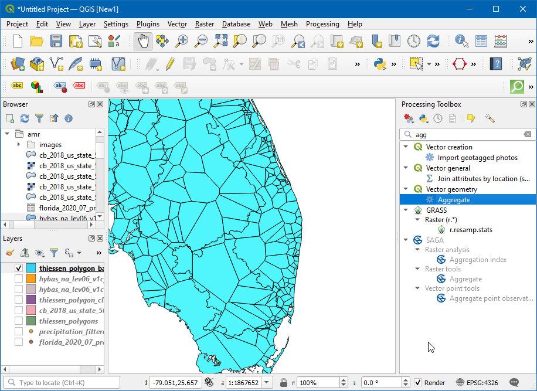

Berekenen gemiddelde regenval voor gebied (QGIS3)¶
Berekenen van de waterbalans, modellen van stroming, voorspelling van afloop, klimaatstudies etc. hebben vaak de gemiddelde hoeveelheid regenval in een hydrologisch bassin nodig als invoer - welke schatting ook wel Areal Precipitation of Areal Mean Rainfall (AMR) wordt genoemd.
Berekenen van AMR kan worden gedaan met gegevens betreffende metingen van de regenval. Door de locatie van de meting van de regenval en de gemeten neerslag te gebruiken, kan men de gemiddelde neerslag op een bepaalde locatie schatten met een van de volgende technieken:
Rekenkundig gemiddelde: Men kan eenvoudigweg een gemiddelde nemen van alle gemeten waarden. Deze methode gaat ervan uit dat het veld voor de regenval homogeen is en dat de gemeten observaties van de neerslag onafhankelijk zijn en een gelijk gewicht aan alle metingen voor de neerslag geven.
Thiessen-polygoon: Deze methode verdeelt het gebied in Thiessen-polygonen met de aanname dat de neerslag homogeen is binnen het bedekkingsgebied van elk station. Deze methode wordt ook wel een gebiedsgewogen gemiddelde genoemd. Deze aannames zijn prima voor laaggelegen of vlak terrein, maar niet geschikt voor bergachtig terrein.
Iso-hyetale methode: Deze techniek voor interpolatie berekent Isohyets - lijnen met gelijke neerslag. Het gaat ervan uit dat de neerslag tussen 2 isohyets homogeen is. Deze methode is geschikt als het netwerk voor de metingen van de neerslag dicht is.
Afstand gewogen/raster - Dit is een techniek voor interpolatie waar een raster wordt gemaakt en een waarde voor elke pixel wordt berekend, gebaseerd op de afstand tot stations. Als de rasterpunten eenmaal allemaal zijn geschat, worden zij bij elkaar opgeteld en de som wordt gedeeld door het aantal rastercellen om de gemiddelde neerslag voor het gebied te verkrijgen.
Geostatistische methoden: Regenval wordt strek beïnvloed door lokale factoren - zoals hoogte. Met technieken voor multivariate regressie of Kriging, kan men rekening houden met ruimtelijke autocorrelatie en een betere nauwkeurigheid bereiken. Deze methoden zijn geschikt als de verdeling van de meetstations voor de neerslag uniform en dicht is.
In deze handleiding zullen we de werkstroom voor QGIS leren om de Areal Mean Rainfall te berekenen met de methode Thiessen-polygoon.
Overzicht van de taak¶
In deze handleiding zullen we de gemeten neerslag gebruiken van de stations van het Global Historical Climatology Network (GHCN) en de Areal Mean Rainfall berekenen in elk hydrologisch bassin in de staat Florida.
Andere vaardigheden die u zult leren¶
Hoe gegevens met waarde Null te verwijderen.
Hoe ongeldige geometrieën in een laag te repareren.
Hoe uw geschiedenis van Processing te controleren en een gereedschap opnieuw uit te voeren met dezelfde parameters.
Hoe polygonen te ontbinden en overzichten van statistieken te maken.
Hoe alleen geselecteerde objecten te gebruiken in algoritmes van Processing.
De gegevens ophalen¶
We zullen de gegevenslagen `NOAA Climate data `_ , `HydroSHEDS `_ en `US Census Bureau Cartographic Boundary `_ gebruiken.
Stationsgewijze neerslag¶

Selecteer
Global Summary of the Monthin Select weather Observation Type/Dataset, en dan in Select Date Range kies July 2020, in Search For selecteerStates, in Enter a Search Term typFlorida. Klik op Search.

Klik op Add To Cart, in items klik op View Items.

Schakel naar Custom Global Summary of the Month CSV, klik op Continue.

Selecteer de Geographic Locations en vergroot in Select data types for custom output
Precipitationen selecteerPrecipitation (PRCP). Klik op Continue.

Voer het e-mailadres in en klik op SUBMIT ORDER om de gegevens te kunnen downloaden.

Hydrologische bassins¶
Ga naar de website HydroSHEDS `_ en klik op :guilabel:`Download.

Selecteer

Voer het e-mailadres in en klik op Submit Request om de gegevens te kunnen downloaden.

Staatsgrenzen¶
Bezoek de pagina Cartographic Boundary Files - Shapefile `_. Download het bestand ``cb_2018_us_state_500k.zip` uit het gedeelte States.
Voor het gemak kunt u direct een kopie van alle gegevenssets downloaden vanaf de links hieronder:
Gegevensbronnen: [GHCN], [HYDROSHEDS], [USCENSUS]
Procedure¶
Open QGIS en klik op Databronnen beheren openen.

Schakel, in het dialoogvenster van Databronnen beheren, naar Tekengescheiden tekst. Klik op de
…in Bestandsnaam en blader dan en selecteer het bestandflorida_2020_07_prcp.csv

Kies nu, onder Geometrie definitie Punt coördinaten, X-veld en Y-veld zouden respectievelijk Longitude en Latitude moeten zijn. Kies het Geometrie CRS als EPSG 4326 - WGS 84. Klik op Toevoegen.

Nu zal een nieuwe puntenlaag worden toegevoegd, klik op het pictogram Attributentabel openen.

In de Attributentabel geeft het veld PRCP de hoeveelheid neerslag voor het station weer gedurende de maand juli 2020. Daarnaast, deze gegevens zijn opgenomen in inches. Merk op dat er enkele waarden
Nullzijn die problemen zouden kunnen veroorzaken bij het berekenen. Sorteer de kolom PRCP, en u zul;t zien dat slechts een klein gedeelte van de gegevensset Null is. We zullen nu de stations met waarden Null verwijderen.

Open de Toolbox van Processing door te gaan naar , en zoek en lokaliseer het algoritme .

Selecteer, in het dialoogvenster van Uitnemen op attribuut, de Invoerlaag als
florida_2020_07_prcp, en kies danPRCPin Attribuut selecteren, danis niet nullin Operator. Klik op de…naast Uitgenomen (attribuut), kies:guilabel:Opslaan als bestand…, voer de laagnaam in alsprecipitation_filtered.gpkgen klik op Uitvoeren.

Nu een nieuwe laag is toegevoegd aan het kaartvenster, schakel de oude laag uit, en u kunt zien dat de stations met waarden Null zijn verwijderd.

We zullen nu Thiessen-polygonen maken uit deze laag. Open de Toolbox van Processing door te gaan naar , en zoek en lokaliseer het algoritme .

Notitie
Thiessen-polygonen vertegenwoordigen het gebied van beïnvloeding rondom elk punt. Elke polygoon definieert het gebied dat dichter bij een bepaald station ligt dan bij enig ander station. Dit betekent dat voor de neerslag op enig punt wordt aangenomen dat die hetzelfde is als voor het dichtstbijzijnde station.
Selecteer
precipitation_filteredals de Invoerlaag. Omdat we geen gegevens hebben voor een meting van neerslag buiten de grenzen voor de bassins, kunnen we een gebied als buffer toevoegen. Voer15in als de Bufferregio (% van bereik). Klik op de…in Voronoi-polygonen en selecteer Opslaan als bestand…, en voer dan de naam in alsthiessen_polygons.gpkg. Klik op Uitvoeren.

Een nieuwe laag
thiessen_polygonszal worden toegevoegd aan het kaartvenster. Laten we deze laag clippen tot de grenzen van de staat. Zoek naar het bestandcb_2018_us_state_500k.shpin Browser en sleep het naar het kaartvenster.

De laag met de staten heeft een ander CRS dan het Project CRS. U zult een venster zien met verschillende opties voor transformeren van dit CRS naar het Project CRS. In het dialoogvenster Transformatie selecteren kunt u de standaard transformatie kiezen en op OK klikken.

We zullen nu de laag
thiessen_polygonsclippen tot de grenzen van de staat Florida. Klik op het pictogram Object(en) selecteren en klik op de staat Florida.

Open de Toolbox van Processing door te gaan naar , en zoek en lokaliseer het algoritme .

Selecteer, in het dialoogvenster van Clippen, de Invoerlaag als
thiessen_polygons, selecteer in de Overleglaag de laagcb_2018_us_state_500Ken selecteer het keuzevak Alleen geselecteerde objecten, klik dan op de…in Geclipt en selecteer Opslaan naar bestand… , voer dan de naam in alsthiessen_polygons_clipped.gpkg. Klik op Uitvoeren.

De geclipte laag van thiessen-polygonen
thiessen_polygons_clippedzal worden toegevoegd aan het kaartvenster, Schakel de zichtbaarheid van alle andere lagen uit. Omdat het onze taak is om de gemiddelde neerslag voor elk bassin te berekenen, zullen we nu de polygonen laden die de bassins weergeven. Lokaliseer de laaghybas_na_lev06_v1c.shpvanuit de Browser en voeg die toe aan het kaartvenster.

U zult zien dat elk bassin wordt bedekt door veel Thiessen-polygonen en elke polygoon strekt zich uit over meerdere bassins. Klik, om dit te visualiseren, op het pictogram Paneel Laag opmaken openen en wijzig de Doorzichtbaarheid naar``75%``. We zullen nu de beide lagen mt elkaar kruisen om de Thiessen-polygonen bij te snijden tot de grens van elk bassin.

Open de Toolbox van Processing door te gaan naar , en zoek en lokaliseer het algoritme .

Selecteer, in het dialoogvenster van Kruising, de Invoerlaag als
thiessen_polygons_clippeden Overleglaag alshybas_na_lev06_v1c, klik dan op de…in Kruising en selecteer Opslaan als bestand… , en voer dan de naam in alsthiessen_polygons_basin.gpkg. Klik op Uitvoeren.

De uitvoering zal mislukken met het foutbericht heeft een ongeldige geometrie en is overgeslagen. Repareer de geometrie of wijzig de instelling van Processing naar de optie “Ongeldige invoerobjecten negeren”.. U kunt meer te weten komen over deze fout in de handleiding Ongeldige geometrieën afhandelen (QGIS3).

Open, om de geometrieën te repareren, de Toolbox van Processing door te gaan naar , en te zoeken naar en te lokaliseren het algoritme .

Selecteer, in het dialoogvenster Geometrieën repareren, de Invoerlaag als
hybas_na_lev06_v1cen klik op…in Gerepareerde geometrieën en selecteer Opslaan als bestand…, voer de bestandsnaam in alshybas_na_lev06_v1c_fixed.gpkgen klik op Uitvoeren.

Nu wordt een nieuwe laag toegevoegd aan het kaartvenster. We kunnen nu Kruising opnieuw proberen. In plaats van het gereedschap vanaf nul opnieuw te beginnen en alle parameters opnieuw in te vullen, kunnen we het eerder ingevulde dialoogvenster terughalen uit Geschiedenis van Processing en alleen de Overleglaag aanpassen. Klik op .

Dubbelklik op het algoritme native:intersection uit de lijst.

Wijzig de Overleglaag naar
hybas_na_lev06_v1c_fixeden klik op Uitvoeren.

Nu zal een nieuwe laag worden geladen en u kunt zien dat de laag
thiessen_polygons_basinis geclipt, gebaseerd op de grenzen van de bassins.

Laten we nu de waarde voor de gemiddelde neerslag berekenen uit de Thiessen-polygonen voor elk bassin. Dit wordt gedaan met het gereedschap Samenvoegen dat het voor ons mogelijk maakt individuele polygonen te ontbinden terwijl we statistieken berekenen over de waarden van de attributen. Open nu de Toolbox van Processing door te gaan naar , en zoek en lokaliseer het algoritme .

Kies, in het dialoogvenster van Samenvoegen,
thiessen_polygons_basinals Invoerlaag, selecteer alle velden, behalvePRCPenHYBAS_ID, en klik op Geselecteerd veld verwijderen.

In Groeperen op expressie selecteer
HYBAS_ID. Dit betekent dat het gereedschap alle polygonen zal ontbinden die dezelfde waarde voorHYBAS_IDhebben. In ons geval zullen dit alle Thiessen-polygonen zijn die vallen binnen één bassin. In het gedeelte Samenvoegen kunnen we configureren hoe verschillende veldwaarden zullen worden samengevoegd uit alle polygonen die zullen worden ontbonden. Voor PRCP, klik op de knop Expressie om de expressie hieronder in te voeren. De expressie berekent het gebiedsgewogen gedeelte voor elke polygoon. Stel de Functie Samenvoegen in opsum, wat alle gebiedsgewogen gedeelten bij elkaar zal optellen, hetgeen zal resulteren in het gebiedsgewogen gemiddelde. Voor HYBAS_ID, wijzig de Functie Samenvoegen naarfirst_value. Omdat we alle Thiessen-polygonen groeperen op hun HYBAS_ID, zullen alle waarden hetzelfde zijn en de functie first_value zal de eerste attribuutwaarde uit de eerste polygoon in elk bassin gebruiken. Klik op…in Samengevoegd en selecteer Opslaan als bestand…, voer de bestandsnaam in alsareal_mean_rainfall.gpkgen klik op Uitvoeren.
(PRCP * $area) / sum($area)
Een nieuwe laag zal worden toegevoegd aan het kaartvenster. Laten we de Attributentabel openen om die te verkennen. Klik op het pictogram Attributentabel openen.

Het veld PRCP bevat de gemiddelde neerslag voor het gebied voor elk bassin in inches.

If you want to give feedback or share your experience with this tutorial, please comment below. (requires GitHub account)